Dates are drawn from filename annotations, publication records, postmarks, yearbook inscriptions, and newspaper mastheads. Where no explicit date exists, an estimated range is given based on photographic format, clothing, vehicles, architectural context, and comparison with confirmed photographs. Estimated dates are marked with a dashed indicator.
The Founding Era
A frontier resort town takes shape at the gateway of the San Gorgonio Pass
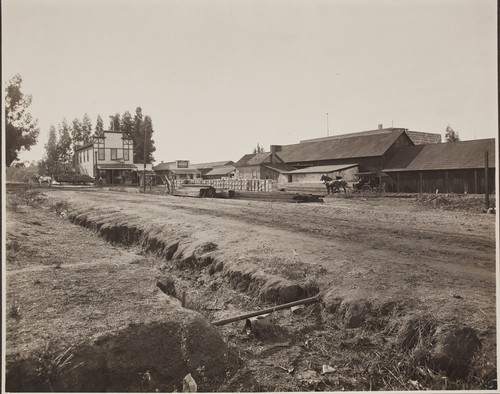
Egan Avenue
Egan Avenue in Its Earliest Days
George C. Egan, for whom the street was named, surveyed and platted Beaumont with its distinctive diagonal street grid. These earliest street-view photographs show a frontier commercial strip with unpaved roads, wooden storefronts, horse-drawn transport, and open irrigation ditches. The photographic print quality — albumen or early gelatin silver — and the complete absence of automobiles or electric infrastructure place this scene no later than the mid-1890s. Visual comparison with the confirmed 1907 postcard shows significantly less commercial development, suggesting a date in the late 1880s to early 1890s.
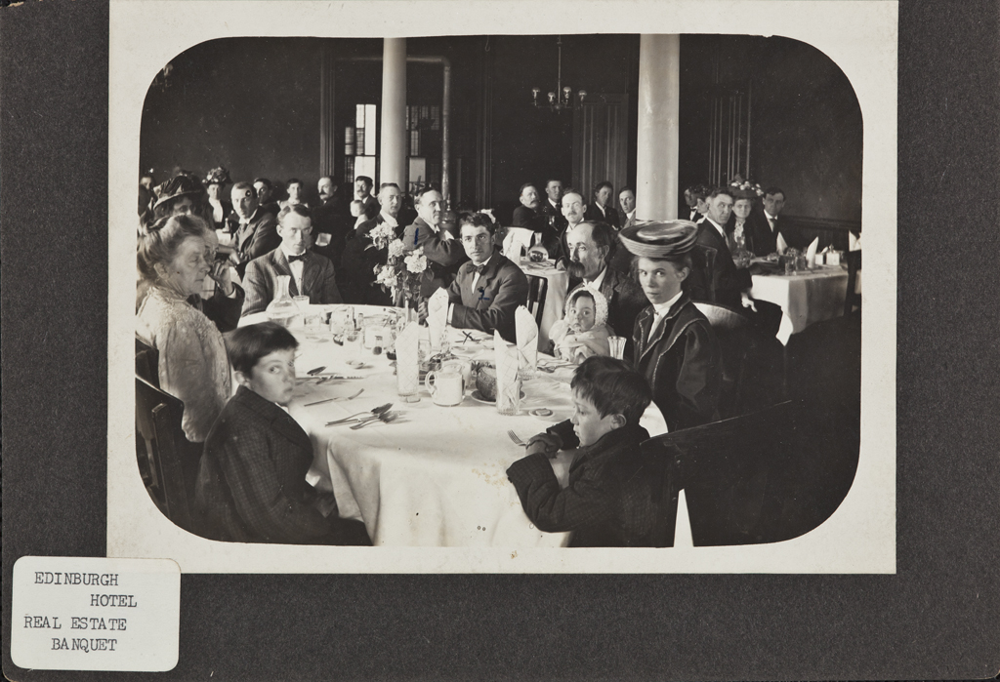
Hotel Beaumont
Hotel Beaumont Opens
The grand Hotel Beaumont — a magnificent three-story Queen Anne Victorian resort with wraparound porches, twin turrets, and elaborate ornamental woodwork — opened in 1887–1888 and immediately established Beaumont as a destination for wealthy travelers seeking California's mild inland climate. A large-format photograph dated 1888 shows the hotel standing amid completely undeveloped land, with the San Bernardino range visible on the horizon and guests arriving by horse and carriage. A second undated photograph, showing the same structure with the identical surrounding landscape, is estimated to the same 1888–1895 period by visual analysis of women's dress (full Victorian/bustle silhouette, declining after ~1895) and the absence of any neighboring buildings.
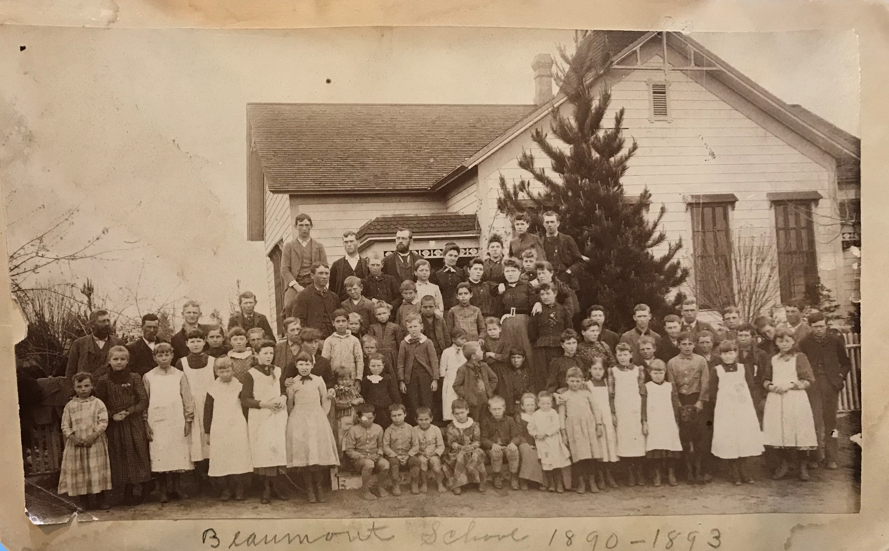
Wellwood School
Wellwood School's First Building
The first Wellwood School building served the growing Beaumont community from approximately 1890 to 1893 before being replaced. A single-story frame schoolhouse, it represents the earliest documented investment in public education for the city. The photograph is held by the Beaumont Library District.
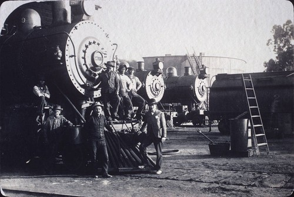
Beaumont Train Depot · Railroad Workers
Steam Locomotives and Their Crews at the Depot
Railroad workers pose alongside steam locomotives at the Beaumont Train Depot. The Southern Pacific line through the San Gorgonio Pass was maintained by a racially diverse workforce — including many Mexican and Mexican-American section laborers — who built the tracks, operated the roundhouse, and sustained the infrastructure that defined the city. The Banning Library District holds this photograph, which is annotated to the 1890s.
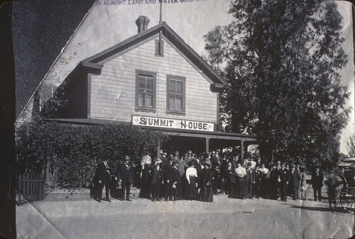
Summit House · Banning
Summit House Stage Stop
The Summit House in Banning served as a waystation for travelers navigating the San Gorgonio Pass in the era before and during the early railroad period. Two photographs annotated to the 1890s document the structure's character as a stage-stop waypoint in the pass communities. A third image from Calisphere, dated 1911, shows the building in its later years.
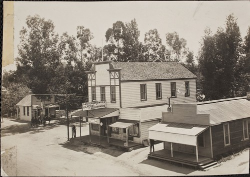
Beaumont Post Office
Post Office at the Corner of Fifth & Egan
A photograph annotated to the 1890s shows the Beaumont Post Office occupying the northeast corner of Fifth Street and Egan Avenue — the commercial heart of the young city. This intersection, defined by the post office on one corner and later the WCTU Fountain and Bank of Beaumont on others, remained the symbolic center of downtown Beaumont for generations.
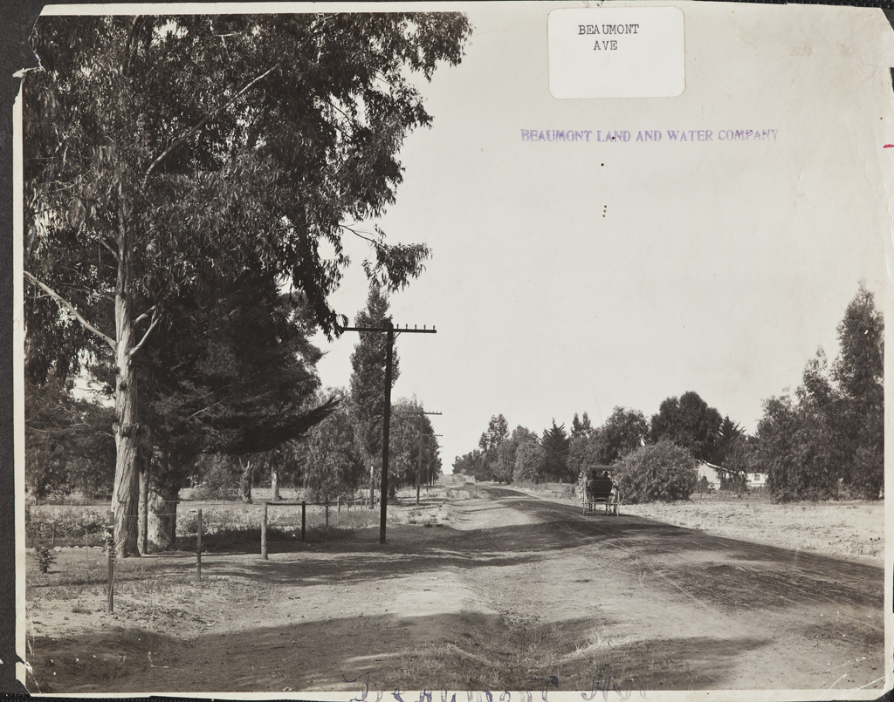
Eucalyptus Trees · Beaumont Avenue
Eucalyptus Trees Planted on Beaumont Avenue
Eucalyptus trees were planted along Beaumont Avenue in a beautification effort around the turn of the century — a late-Victorian civic improvement common across Southern California. A postcard looking north on Beaumont Avenue documents the avenue beginning to take on the tree-lined character it would hold for decades. A later color postcard shows the same corridor after the trees had matured.
The Town Takes Shape
A commercial district matures, institutions are founded, and the Cherry Festival begins
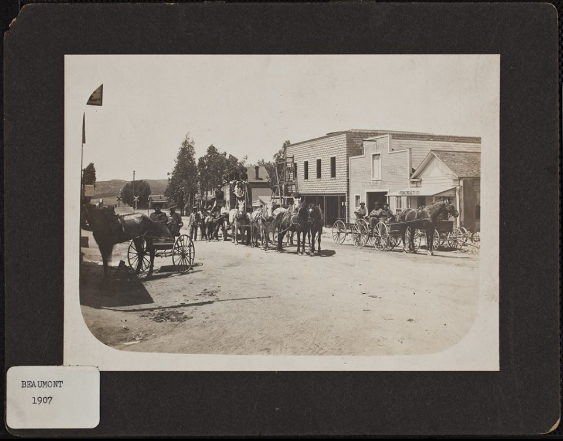
Egan Avenue
Egan Avenue Looking South — Postcard
A postcard view of Egan Avenue looking south, dated 1907, shows a substantially more established commercial block than the early street-view photographs: two-story brick and wood buildings, a graded roadway, and growing pedestrian activity. The postcard was held by the Beaumont Library District.
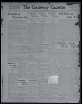
Gateway Gazette
The Gateway Gazette
The Gateway Gazette, one of Beaumont's local newspapers, published an issue on April 30, 1908. The paper's name celebrated Beaumont's geographic role as the gateway between the Inland Empire and the Mojave Desert — a position reinforced by the Southern Pacific Railroad and, a generation later, by the automobile highways of Routes 60, 70, and 99.
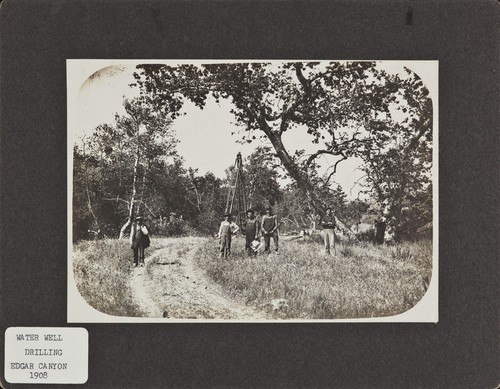
Beaumont Land & Water Company
Water Well Drilling in Edgar Canyon
The Beaumont Land and Water Company documented water well drilling operations and a public viewing of the flowing well in Edgar Canyon in 1908. Water rights and reliable irrigation were central to the agricultural economy of the pass — the apple and cherry orchards that defined Beaumont's identity depended entirely on controlled access to groundwater.
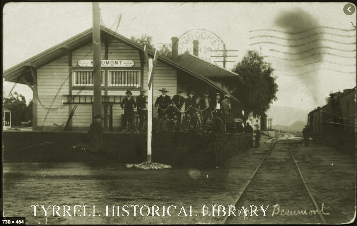
Southern Pacific Railroad · Train Depot
S.P. Agricultural Demonstration Train Visits Beaumont
The Southern Pacific Railroad operated an Agricultural and Horticultural Demonstration Train that stopped in Beaumont in March 1909 — a traveling exhibit designed to educate farmers along the line about modern growing techniques. The visit reflects both the importance of the rail connection to the pass and Beaumont's active agricultural identity in the early 20th century. A separate photograph from the Tyrrell Historical Library, also dated 1909, documents the Beaumont Train Depot itself.
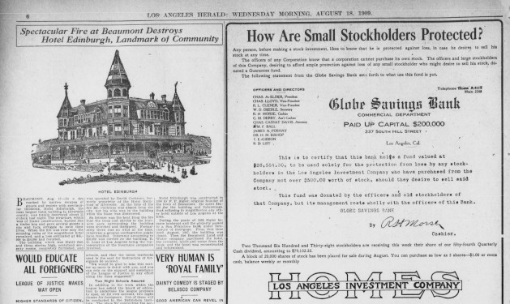
Hotel Beaumont
Hotel Beaumont Destroyed by Fire
The Hotel Beaumont burned to the ground. The Los Angeles Herald reported the fire on August 18, 1909, marking the end of Beaumont's first era as a fashionable Victorian resort destination. The loss of the grand structure was a significant blow, though the city continued to grow around its railroad and agricultural economy. The hotel was later renamed Hotel Edinburgh before its destruction.

Fifth Street · WCTU Fountain
Fifth Street Photographed & the WCTU Fountain Dedicated
Two significant records survive from 1910: a street-level photograph of Fifth Street looking east toward Egan Avenue, showing a commercial block in transition from wooden to brick construction with early automobiles alongside horse-drawn wagons; and — on Christmas Day, December 25, 1910 — the public dedication of the Women's Christian Temperance Union Fountain at Fifth and Egan. A postcard of the dedication ceremony is held in the Leslie A. Rios III collection. The ornamental drinking fountain, adjacent to the Post Office, became a landmark of the intersection for decades.
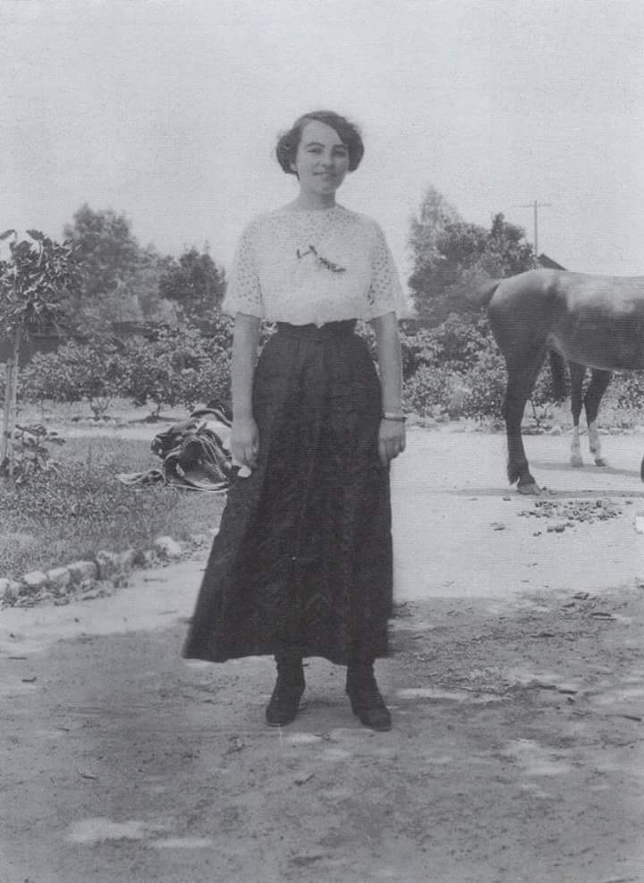
Laura May Stewart · Summit House · Stewart Ranch
Laura May Stewart at the Ranch; Summit House Documented
Three portraits of Laura May Stewart — in chaps, on horseback, and in a formal pose — are dated 1911 and taken at Stewart Ranch. Stewart, the daughter of Reznor Stewart, would go on to become the first Cherry Festival Queen in 1919. In the same year, Calisphere photographers documented the Summit House stage stop in Banning.
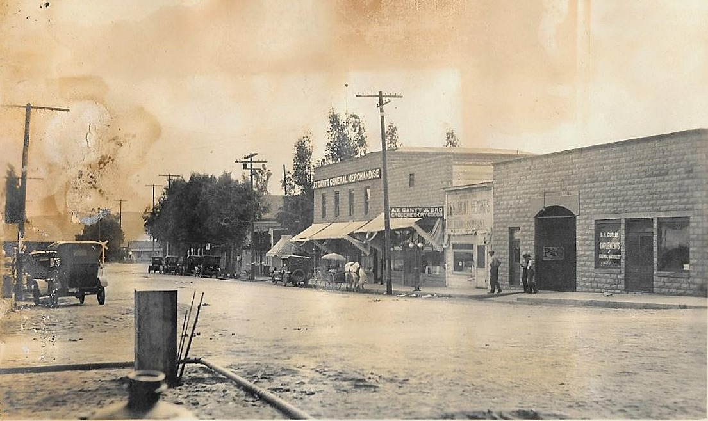
Egan Avenue
Egan Avenue Postcard, Postmarked 1915
A postcard view of Egan Avenue, postmarked 1915 and sourced from a collector via eBay, shows the street in a mature commercial state — brick facades, visible utility infrastructure, and mixed horse-and-automobile traffic. Comparing this image with the 1907 postcard of the same view reveals eight years of substantial commercial development.
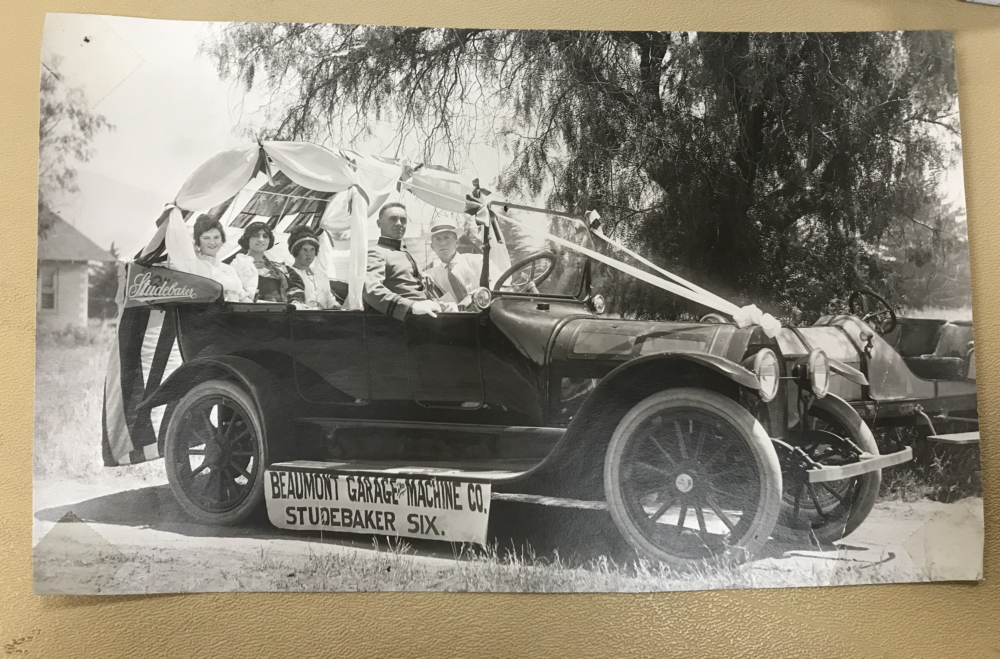
Cherry Festival · Laura May Stewart
First Cherry Festival Queen
Laura May Stewart was crowned the first Cherry Festival Queen in 1919, photographed in the center of the back seat of an automobile for the occasion. The Cherry Festival — celebrating Beaumont's apple and cherry orchard economy — became the defining annual civic tradition of the city, continuing in unbroken succession into the present day. The 2026 Cherry Festival marks more than a century of this tradition.
Between the Wars
New schools, a growing downtown, and the Depression-era city
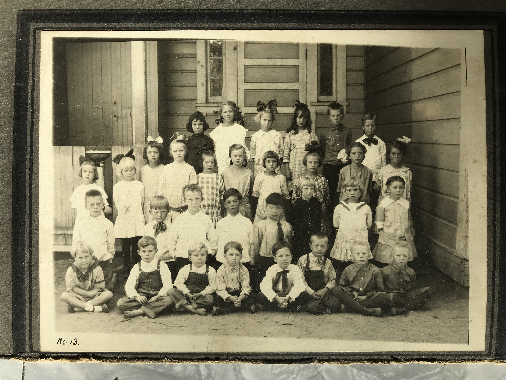
Wellwood School
Wellwood School — Transitional Building
A photograph annotated "circa 1916–17" shows Wellwood School in its intermediate building, after the 1890s frame structure and before the 1921 construction. The image documents the school during a period of transition as Beaumont's population grew through the teens.
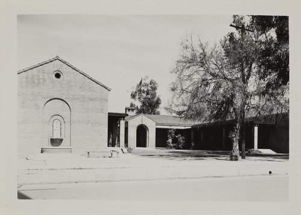
Wellwood School
New Wellwood School Built
A substantial new Wellwood School building was constructed in 1921. Two photographs from the Beaumont Library District show the new school shortly after its completion — a Mission Revival-influenced structure that would serve generations of Beaumont students. A 1971–72 kindergarten class photograph also survives in the archive, documenting the school a half-century into its use.
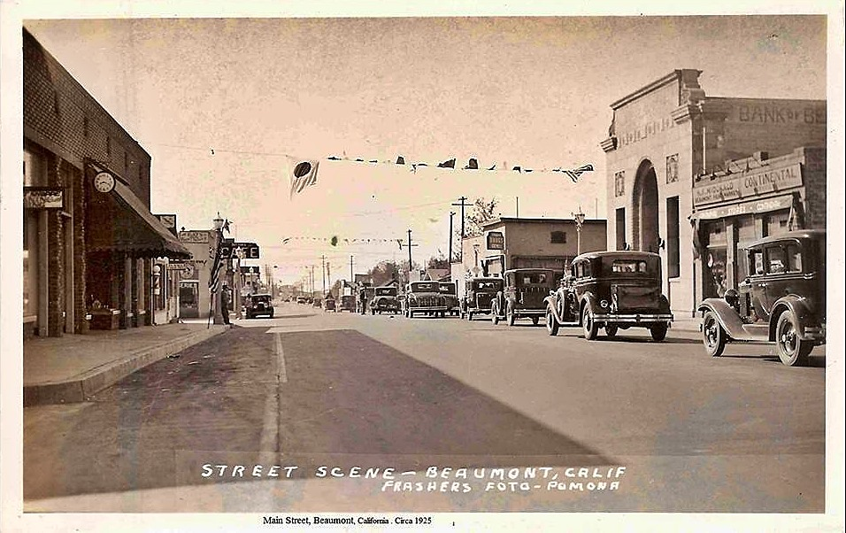
Fifth Street Downtown
Fifth Street — Frasher Photograph
Burton Frasher Sr., a celebrated photographer who documented Southern California's communities throughout the 1920s–1940s, photographed Fifth Street in Beaumont in 1925. The image — shared on Facebook in 2020 via the Clamshack community archive — shows a prosperous main street with established storefronts, parked Model T-era automobiles, telephone poles, and awnings: a city in its prime commercial moment between the wars.
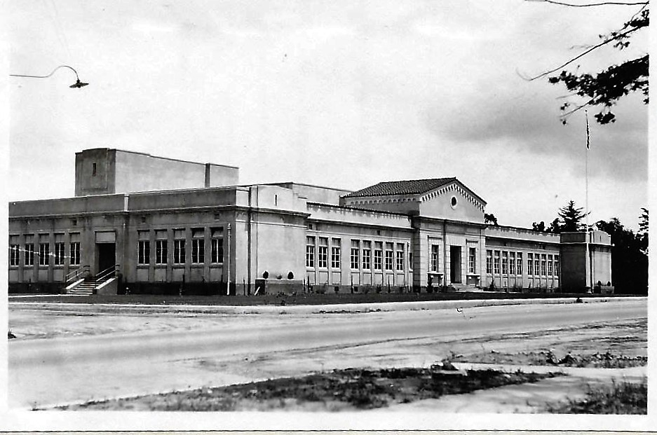
Beaumont High School
Beaumont High School — 1930 Yearbook
The 1930 Beaumont High School yearbook includes a photograph of the school building — later converted to the Beaumont Civic Center — at the outset of the Depression decade. The campus would appear again in yearbooks through 1942 and into the postwar years, providing a longitudinal photographic record of one of the city's most important institutions.
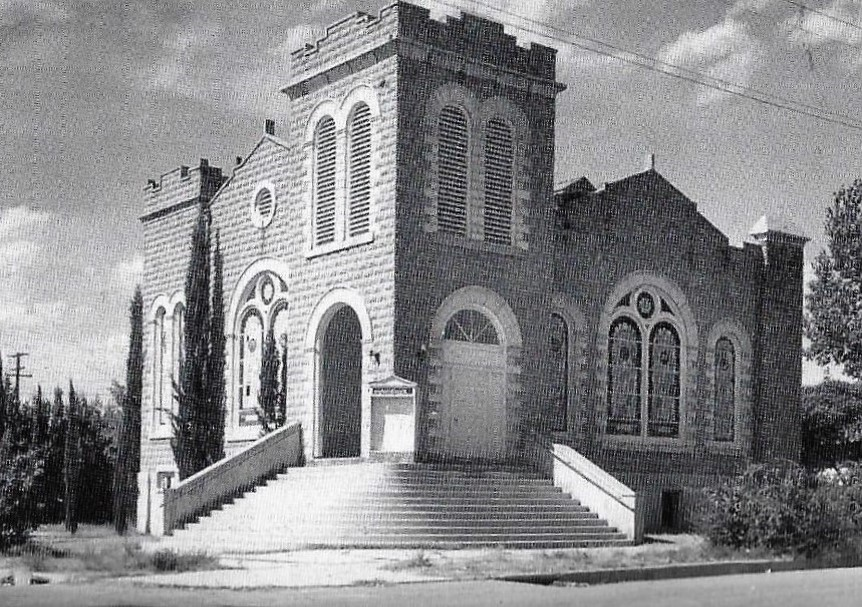
First Christian Church · 701 Egan Ave.
First Christian Church Established on Egan Avenue
The First Christian Church at 701 Egan Avenue was built or established in the 1930–1940 period. A photograph annotated to this range captures the building, while a separate image labeled "late 1950s" shows it in a later phase. The structure is still standing; a contemporary photograph was taken in May 2022.
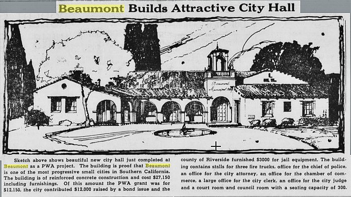
Old City Hall · 500 Grace Ave.
Desert Sun Documents Beaumont, 1939
A photograph from the Desert Sun newspaper dated April 28, 1939 — shared on Facebook in December 2020 — provides a document of Beaumont civic life on the eve of World War II. The image is associated with Old City Hall at 500 Grace Avenue.
Wartime & Postwar Beaumont
Railroad families, yearbook generations, and a new highway economy
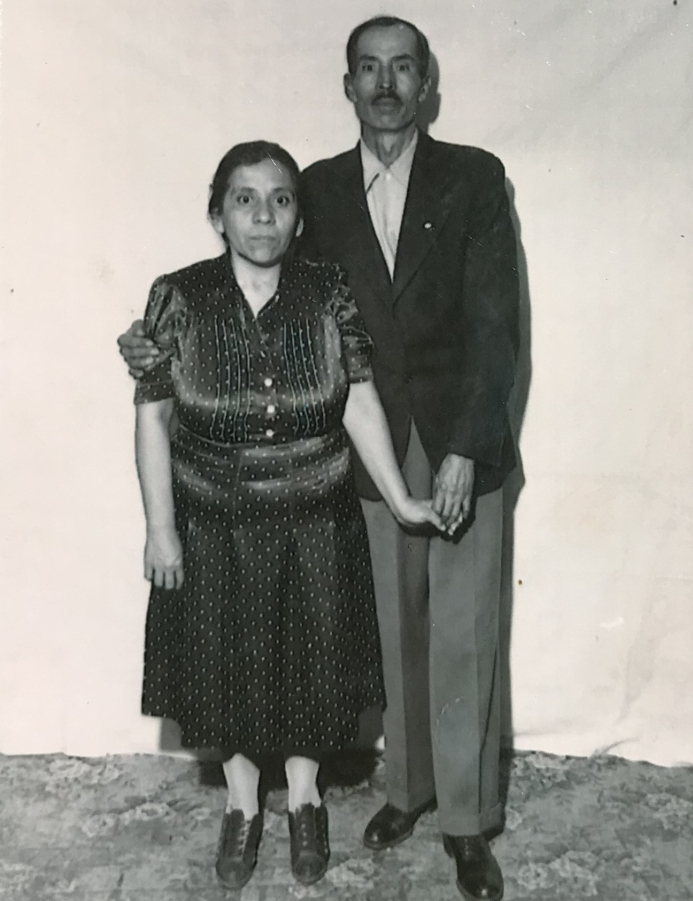
Luis Estrada · Railroad Workers · Mexican Families
The Estrada Family and Wartime Rail Workers at the Depot
Emeteria and Luis Estrada, photographed together in the 1940s, represent the Mexican and Mexican-American families who built and maintained the Southern Pacific Railroad through the San Gorgonio Pass for generations. Luis Estrada worked for the SP for decades — his family photographed at meals inside the section house, and workers captured in multiple group portraits at the Beaumont depot. Women are documented among those who swept the tracks. A statue of Luis Estrada now stands at the California State Railroad Museum in Sacramento; a road in Beaumont was named in his honor, and its 20th anniversary was celebrated in 2021.
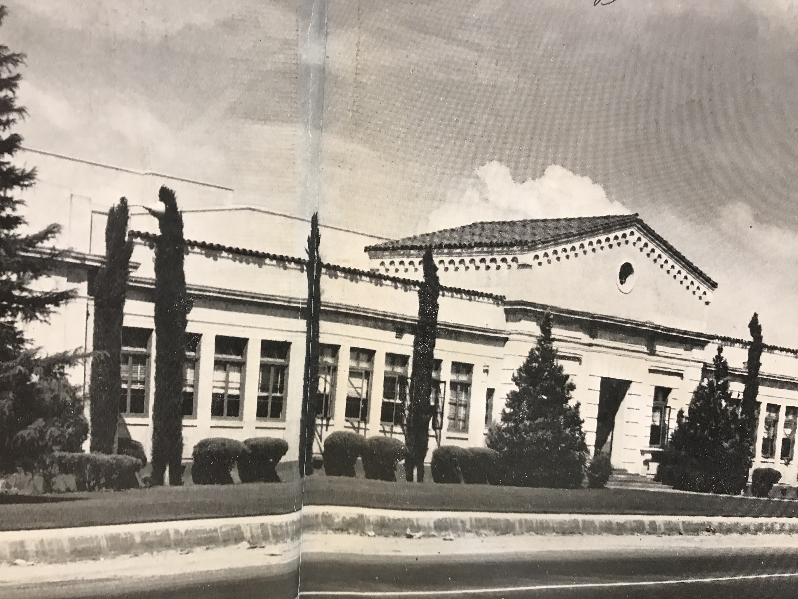
Beaumont High School
BHS Yearbooks — Wartime Through Postwar
Yearbooks donated by Leslie Rios document student life at Beaumont High School across the war and postwar years. The 1942 yearbook captures the school during wartime; the 1946 volume includes a view of 6th Street; the 1949 yearbook shows the school band; and the 1950 editions document majorettes and a typing class — evidence of a thriving community institution through one of Beaumont's most formative decades. These yearbooks were shared with the Beaumont Library District.
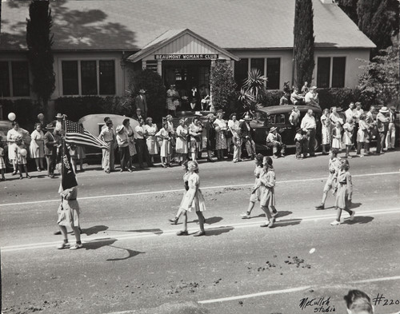
Cherry Festival · Beaumont Woman's Club
Cherry Festival Parade at the Woman's Club
A 1947 Cherry Festival parade passes in front of the Beaumont Woman's Club at 306 E. 6th Street. The Woman's Club building has hosted community gatherings, civic functions, and society meetings for decades — and remains the meeting place of the San Gorgonio Pass Historical Society today.
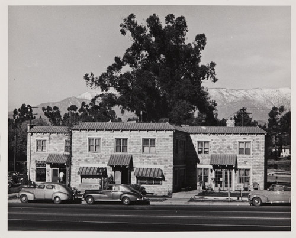
Sunset Plaza Hotel
Sunset Plaza Hotel on Routes 60/70/99
The Sunset Plaza Hotel, photographed circa 1948 and held by Calisphere, exemplifies Beaumont's mid-century role as a highway stop on U.S. Routes 60, 70, and 99 — the major arteries connecting Los Angeles to the desert and beyond. The postwar motel and roadside commercial culture transformed Sixth Street into a dense corridor of cafes, motels, and gas stations serving cross-country travelers.
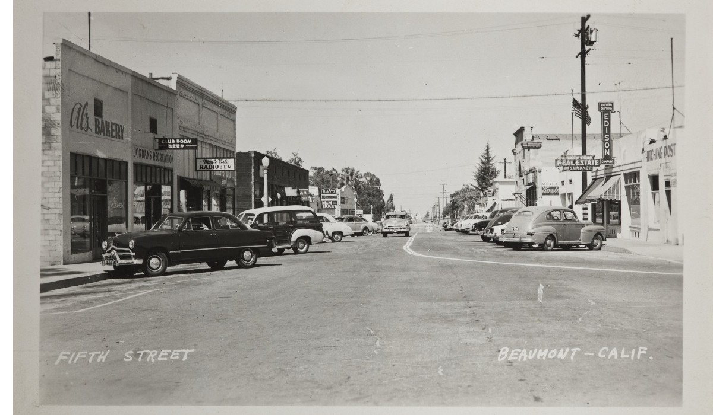
Fifth Street Downtown
Fifth Street Looking West — Postwar Era
A photograph dated 1949–50 shows Fifth Street looking west from the intersection of Fifth and Grace Street — a postwar commercial view with storefront signage, parked automobiles, and the visual character of a prosperous California small city just before the suburban transformation of the 1950s and 1960s.
Mid-Century & the Record-Gazette Years
The city documents itself — fire department, churches, and civic institutions in print
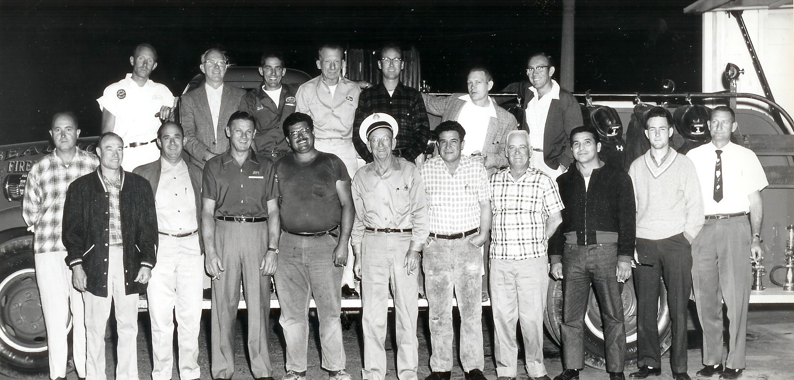
Beaumont Fire Department
Beaumont Volunteer Fire Department — Early Era
Multiple photographs document the Beaumont Volunteer Fire Department in the late 1950s and early 1960s: the department at 500 Grace Avenue, a group portrait with equipment, and a photograph with Fire Chief Clarence "Pappy" Lewis (left) and fireman Ray Samson (right) that is annotated to the early 1960s. These images capture the department in its volunteer-only era, before the city moved toward a professional staffing model.
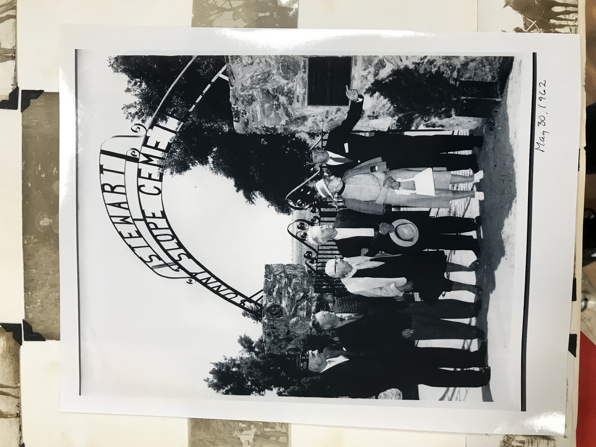
Stewart Sunnyslope Cemetery
Stewart Sunnyslope Cemetery Gate Dedicated
A photograph annotated to the 1960s shows the Stewart Sunnyslope Cemetery gate dedication ceremony, with the Stewart family donating additional funds for the cemetery. The cemetery was established by the Stewart family — the same family as Laura May Stewart, the first Cherry Festival Queen — and remains one of the historic burial grounds of the pass area.
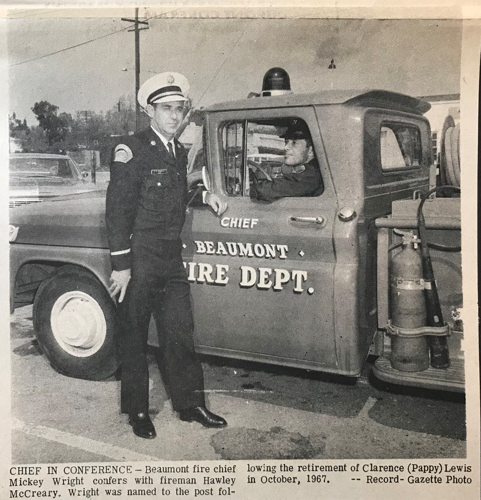
Record-Gazette
A Single Issue of the Record-Gazette Captures Three Institutions
The April 30, 1968 edition of the Record-Gazette documented three distinct threads of civic Beaumont in a single issue: the Fire Department chief, the Presbyterian Church at 702 Euclid Avenue, and the Sunnyslope Cemetery. This newspaper has been a primary photographic source for the SGPHS archive, capturing community institutions that might otherwise go undocumented.
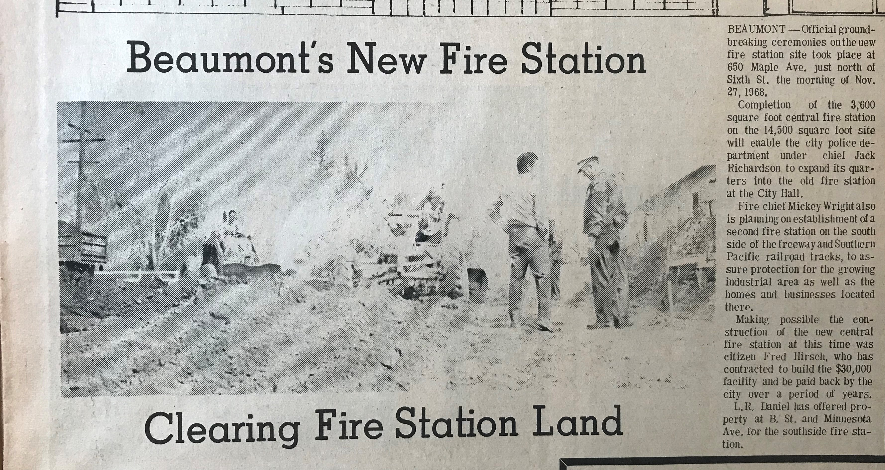
Beaumont Fire Department
New Fire Station Under Construction on Maple Avenue
The Record-Gazette of March 21, 1969 documented the construction of a new Beaumont Fire Station on Maple Avenue — marking the department's expansion beyond its long-standing home at 500 Grace Avenue. Two photographs from the newspaper issue show the construction in progress.
The Modern City
A professional fire department, centennial recognition, and ongoing preservation
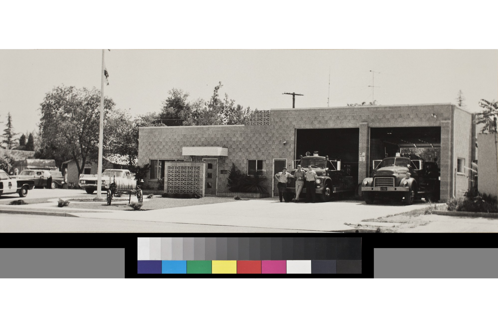
Beaumont Fire Department
Beaumont City Fire Department — Growth and Change
A rich photographic archive documents the fire department across the 1970s: the 1971 City Fire Department (Calisphere); a LaFrance fire engine in the Cherry Festival parade in the late 1970s; Engine 24; Scott DeForge and John McLaughlin photographed in 1976; the City Volunteer Fire Department in 1973; and the department badge from the same decade. The arc closes with the November 28, 1978 Record-Gazette article reporting the City Council's vote to contract fire services with the California Department of Forestry — a pivotal administrative change for the department.
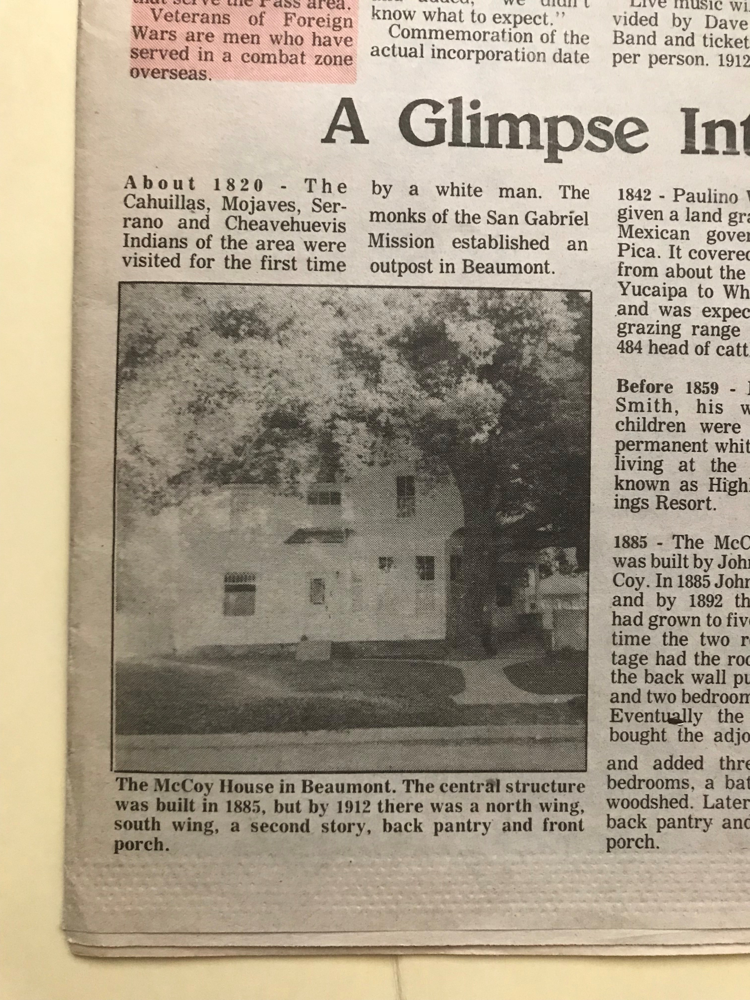
McCoy House & Lumberyard
McCoy House in the Community Advisor
The Community Advisor of November 12, 1987 featured the McCoy House, one of Beaumont's significant historic residences. The McCoy property included a lumberyard that helped supply building materials to the growing city in the late 19th and early 20th centuries. A Google Street View image from 2018 documents the house in its present state.
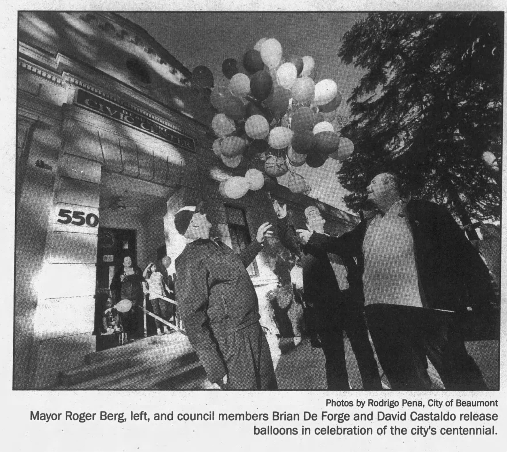
Beaumont Centennial
Beaumont's 100th Anniversary of Incorporation
The Record-Gazette covered Beaumont's centennial — 100 years since its incorporation — in its November 23, 2012 issue. The occasion prompted the community to look back across a century of history: from the Hotel Beaumont and the first Cherry Festival through the railroad era, the wartime years, and the suburban transformation of the Inland Empire.
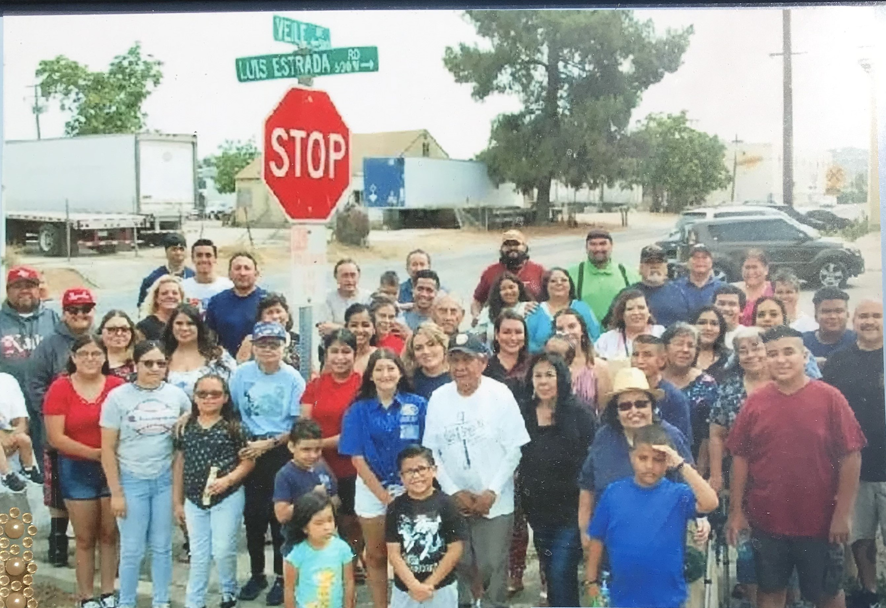
Preservation & Recognition
Ongoing Preservation Work and Community Recognition
Recent years have brought renewed attention to Beaumont's multicultural heritage and historic fabric. Sacred Heart Barrio Church — the longtime parish of the city's Latino community — was documented in 2018. The Luis Estrada Road 20-year anniversary was celebrated in 2021 with family and community gathered at the sign. The Eyer House (photographed 2019), Bogart House (2020), McCoy House (2018), and other historic residences continue to be studied and documented by the Society. Summit School received a contemporary photograph in 2024. The archive grows.